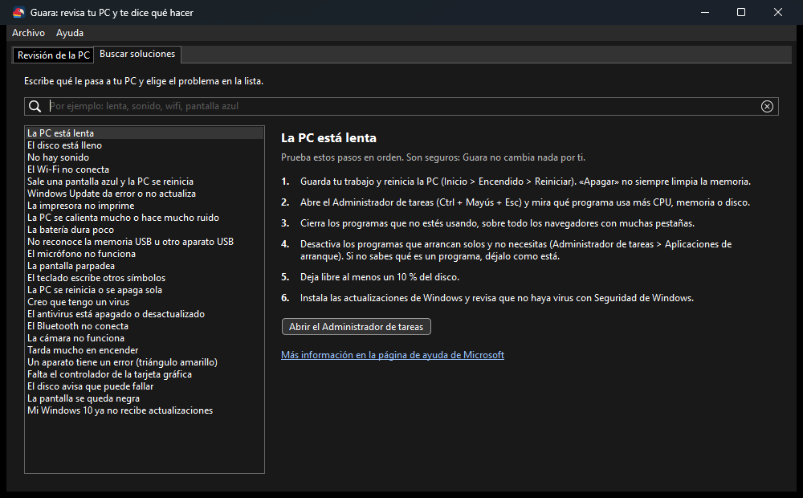

Revisa tu PC · Windows 10 y 11 (64 bits)
Guara revisa tu PC y te dice qué hacer.
Como la guara roja, nuestra ave nacional, que todo lo ve y todo lo cuenta: revisa tu PC y te explica en palabras sencillas qué tiene y qué hacer.
Gratis, sin publicidad y de código abierto · Código en GitHub

Qué hace
- Disco, memoria, procesador, tarjeta gráfica, batería y aparatos con problemas.
- Avisa de pantallas azules y apagados inesperados.
- Buscador de soluciones con pasos seguros y enlaces oficiales de Microsoft.
- Solo lee: no cambia nada. Su informe para pedir ayuda no lleva tus datos.
Cómo instalarlo
- Baja el .zip con el botón «Descargar para Windows».
- Descomprímelo: clic derecho sobre el archivo y «Extraer todo». No hace falta instalar nada.
- Abre
Guara.exe. Si Windows muestra «Windows protegió su PC», es porque el programa es nuevo y todavía no tiene firma digital: pulsa «Más información» y luego «Ejecutar de todas formas». - Lee lo que encontró. Si hay un problema, pulsa «Ver solución» para ver los pasos.
Cómo saber que es el original
Cada versión la arma GitHub a partir del código público, y junto a cada .zip publicamos su huella SHA-256 (el archivo que termina en .sha256). Para comprobarla, abre PowerShell en la carpeta de la descarga y escribe Get-FileHash seguido del nombre del .zip. Si sale la misma huella, el archivo es el original.
¿Algo no funciona?
Cuéntanos en GitHub y lo arreglamos a la vista de todos. Si te sirve, también puedes apoyarnos con una donación.